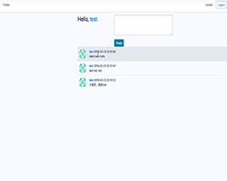
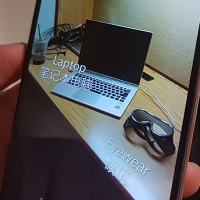

Junhe Zhang
Software Developer
Software Developer
I'm a Senior at Stony Brook University Majoring in computer science. My current interests include Machine Learning and graph theory. Most of my work is done in Java, but I'm familiar with other languages and tools specified in my resume. I will complete my bachelor's degree on December 30th 2019. I'm looking for a software development internship for SUMMER 2019, and also full-time jobs as a software developer after my graduation at the end of 2019.
You can find some of my recent projects below.
more available on my github.
|  | Twittor
Twitter Simulator(Twittor):
Support mult-users post their tweets concurrently. Used MySQL and python Flask framework to implement, bootstrap to style it. |
| E-Commerce System(TaoBaoBao)
E-Commerce System simulater, support common online shopping and selling activites. Used Python-Flask micro-framework to implement and SQLAlchemy to connect Database |
 |
|  | WiTT A point and shoot translator for Android. Tap on an object in the camera's view to display its name in two languages in augmented reality. Technical Communications Projects:I did New Release about Amazon and also a Java installation instruction. |